how to make something that makes (almost) anything
zach fredin's class projects
For MAS.865, I built a flexural 3-degree-of-freedom compliant parallel manipulator (3-RRR CPM) using novel modular superelastic flexures rather than more traditional sliding or rolling elements. I characterized the machine's performance and used it to mechanically rule a rather mediocre (and quite coarse) diffraction grating, which was nonetheless capable of splitting sunlight into a rainbow. To learn more about the finished product, click here or on the large 4-pane picture below. The smaller thumbnails further on and the subjects listed in the navigation area refer to weekly project updates, each of which contributed to the final system and in many cases represent abandoned rabbit holes worthy of further exploration.about me
final project
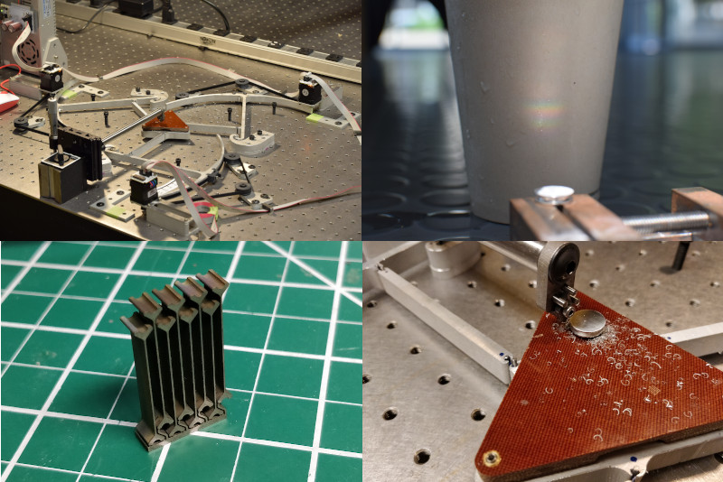weekly updates
| 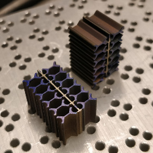 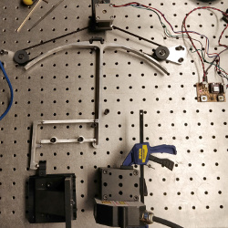 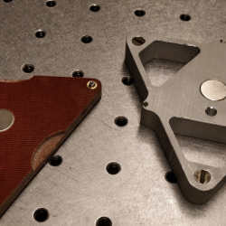 |
| 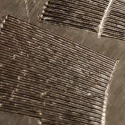 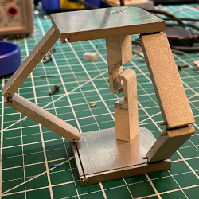 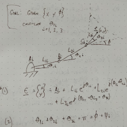 |
| 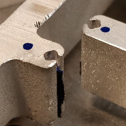 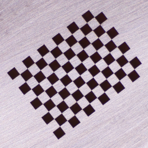 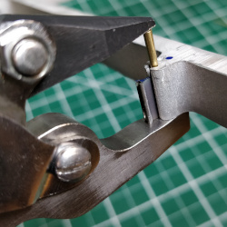 |
| 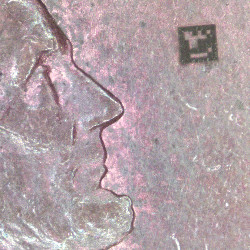 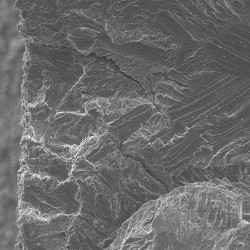 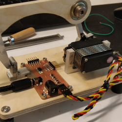 |
© zach fredin, massachusetts institute of technology, 2021